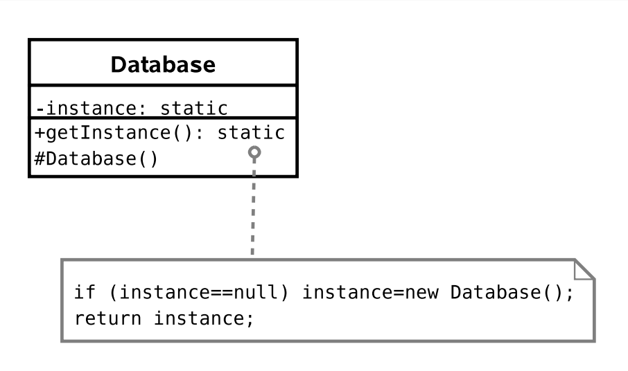

Paradigma de Programación Orientada a Objectos
Buenas Prácticas
Patrones de Diseño
Los patrones de diseño buscan dar solución a problemas comunes en la programación.Tipos de patrones
- Patrones creacionales.
- Patrones estructurales.
- Patrones de comportamiento.
Patrones creacionales
Singleton
Problema:

Si cada objeto de la clase Session crea una instancia de Database se puede sobrecargar la base de datos.
Solución 1:
Usar una variable global del tipo Database a la que todos tengan acceso.Solución 2:
 Garantiza que sólo haya una instancia.
El código es intuitivo.
Garantiza que sólo haya una instancia.
El código es intuitivo.
Patrones estructurales
Proxy
Problema:
Un editor que puede incluir imágenes dentro de un documento.
Se requiere que la apertura del documento sea rápida pero las imágenes son muy grandes para ser cargadas rápidamente.